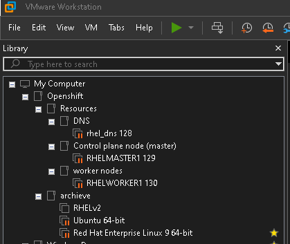

Setting Up an OpenShift POC with RHEL Images in VMware Workstation

Introduction
As part of our efforts to evaluate and implement OpenShift, I have set up a Proof of Concept (POC) environment using VMware Workstation. This blog post outlines the steps I took to create the necessary folder structure and configure the Red Hat Enterprise Linux (RHEL) images required for the POC.
Folder Structure
To organize the various components of the OpenShift POC, I created a structured folder layout within VMware Workstation. Below is an overview of the folder structure:
-
My Computer
-
Openshift
Resources
- DNS
rhel_dns 128
- Control plane node (master)
RHELMASTER1 129
- Worker nodes
RHELWORKER1 130
-
archive
-
RHELv2 -
Ubuntu 64-bit -
Red Hat Enterprise Linux 9 64-bit -
Windows
This structure helps in categorizing the various VMs and resources, making the management of the OpenShift environment more efficient.
Using RHEL Images
For this POC, I used Red Hat Enterprise Linux (RHEL) images. The specific ISO image file used is rhel-9.4-x86_64-boot.iso. This image was downloaded and placed in the appropriate directory for use with VMware Workstation.
Steps to Configure the Environment
-
Download the RHEL ISO: Ensure you have the RHEL ISO image (
rhel-9.4-x86_64-boot.iso) downloaded to your local machine. -
Create VMs in VMware Workstation:
-
DNS VM: Create a VM named
rhel_dns 128for DNS services. -
Control Plane Node: Create a VM named
RHELMASTER1 129for the master node. -
Worker Nodes: Create one or more VMs named
RHELWORKER1 130, etc., for worker nodes. -
Configure Networking: Ensure proper network configuration so that all VMs can communicate with each other.
-
Install RHEL: Use the downloaded RHEL ISO to install the operating system on each VM.
-
Setup OpenShift: Follow OpenShift installation guides to configure the control plane and worker nodes.
Conclusion
By setting up this environment in VMware Workstation, we can thoroughly test and implement OpenShift using RHEL images. This structured approach not only simplifies the process but also ensures a scalable and manageable environment for OpenShift POC.
Feel free to reach out if you have any questions or need further details on any of the steps.
Imported from rifaterdemsahin.com · 2024